Daily UI Challenge
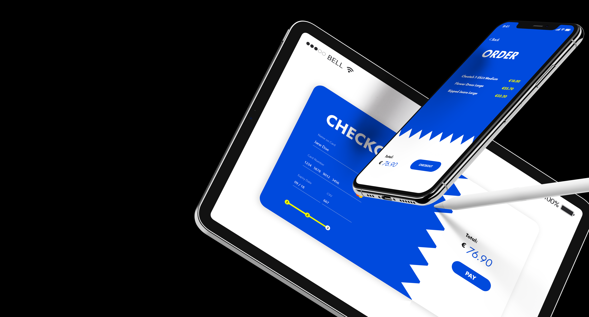UI/UX design for Omniket, a Balkan-oriented freelancing platform/marketplace.
Overview
A series of daily UI design tasks involving different user needs and challenges. Designed by DailyUI.co, aimed to improve UI skills of millions designers in the world. It consists of a series of daily tasks with simple briefs, sent to your email imbox. Here are a few of my projects for this challenge.
Projects
Designing a Checkout Page
The idea behind this one was based around a more corporate look with a few modern details.
The most important part for me was visually separating the "order" and "payment" parts, as it allows the user to look over their order more easily, and thus allow them to have more control over their purchase, in case they have made a mistake or changed their mind. Less confusion and more readable pages allow for smoother user experience.
 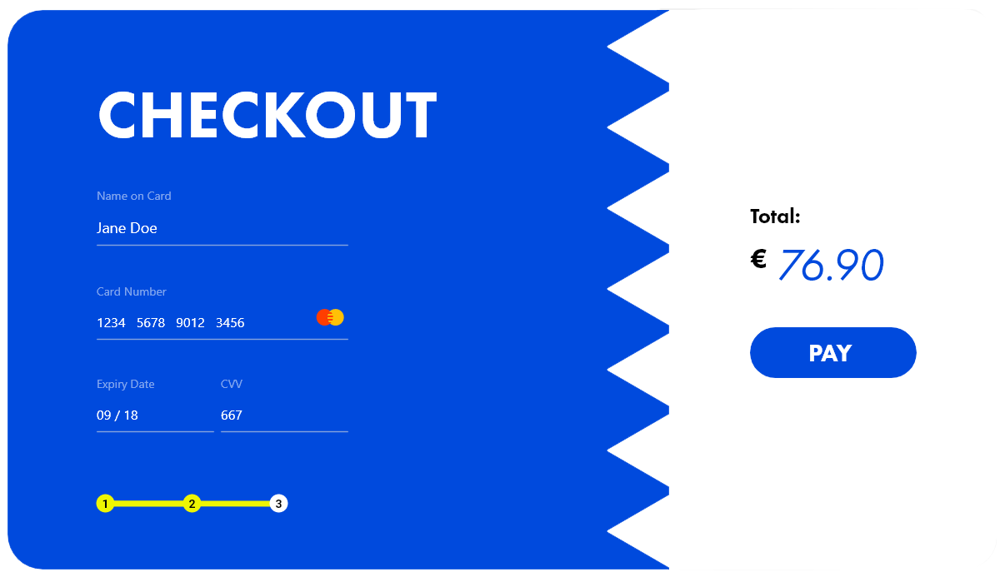
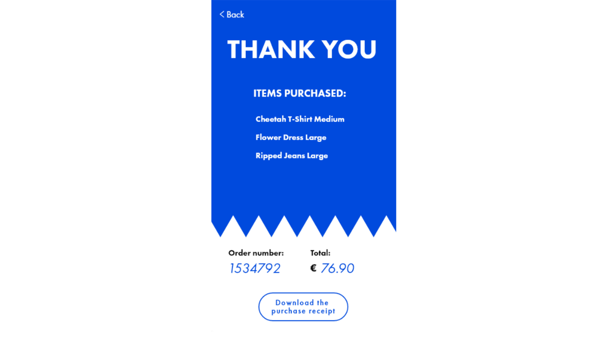
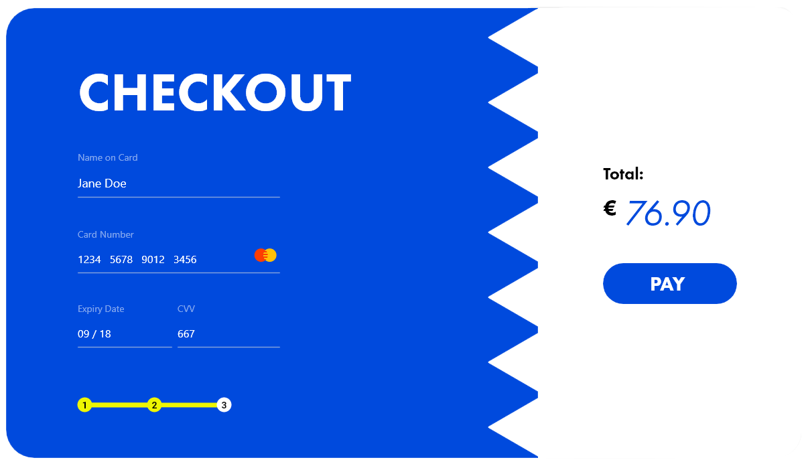
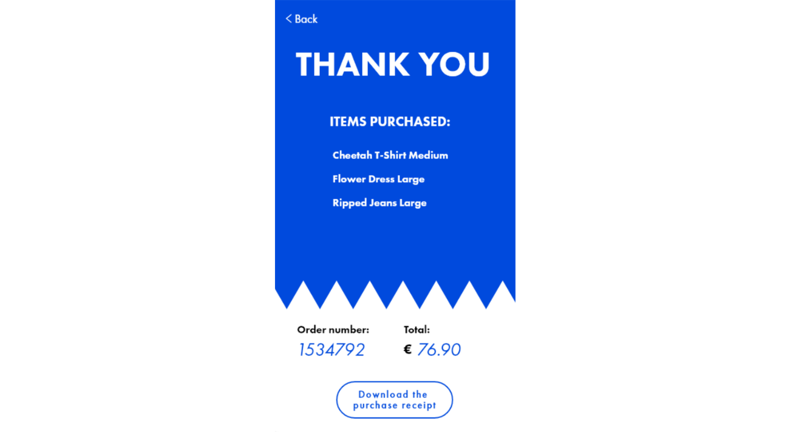
Designing a Calculator
I stuck to the classic layout/design of a mobile calculator as it is already very intuitive for most users, and any special changes could work against usability.
However, what I considered to be a good addition was a section of "specialized" features - currency conversion, temperature measurements, regular scientific calculator, and the ability to access the most commonly used functions.
I also added a feature where the user could load their last calculation/input, even after closing the app (a lot of people accidentally close calculator apps and then end up having to re-type everything, so this would be very useful).
Designing a Sign-In Page
I have decided on a sign-in page for a healthy foods/diet website, that also has its own app.
The use of green is the standard for the healthy foods/diet industry, and I wished to create an intuitive sign-up experience by keeping it minimal, both UI and UX-wise, with a few septs and clicks, and minimalist design combined with relaxing background photos.
 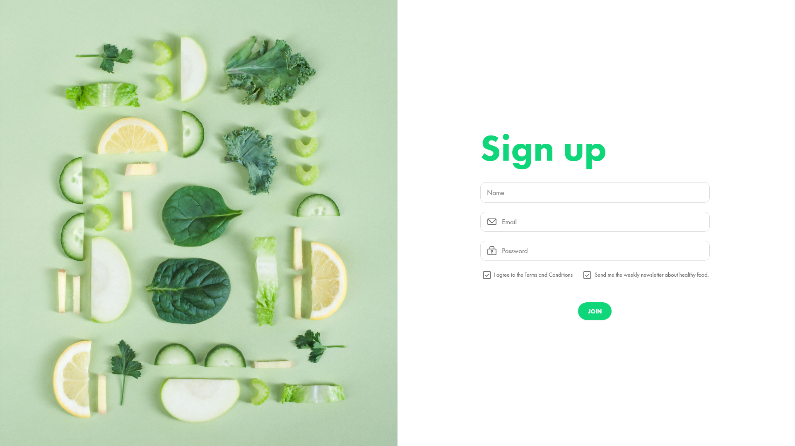
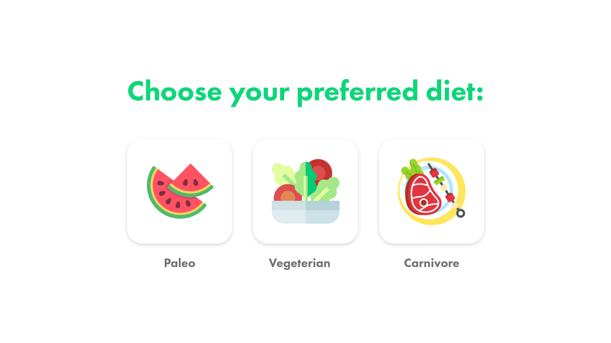
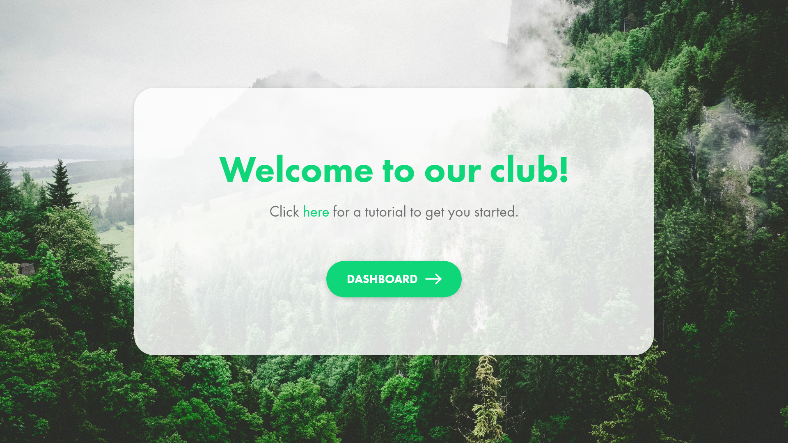
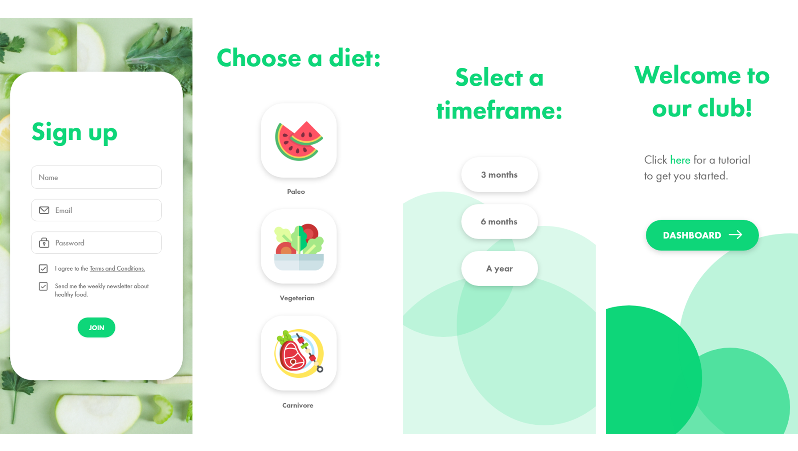
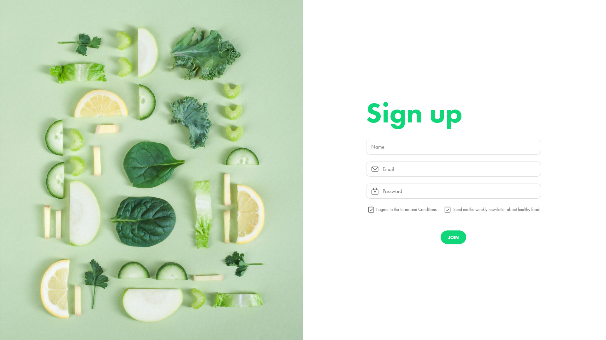
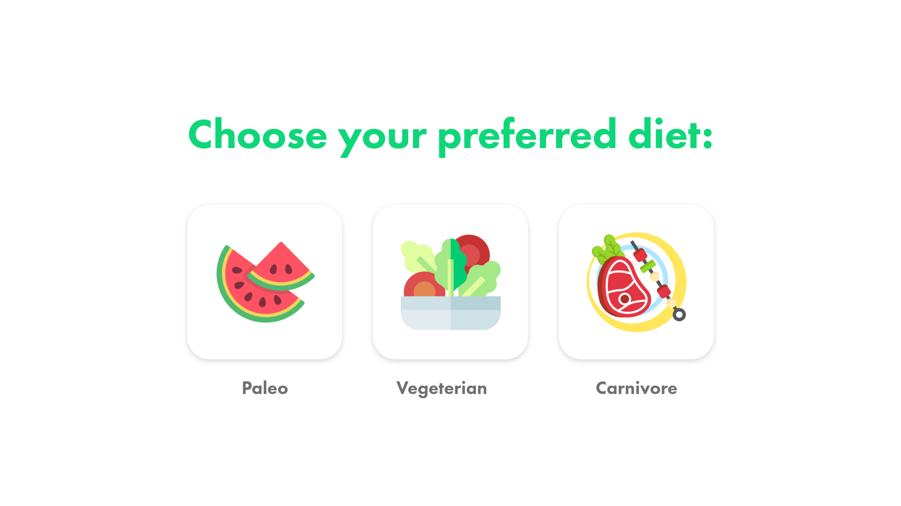
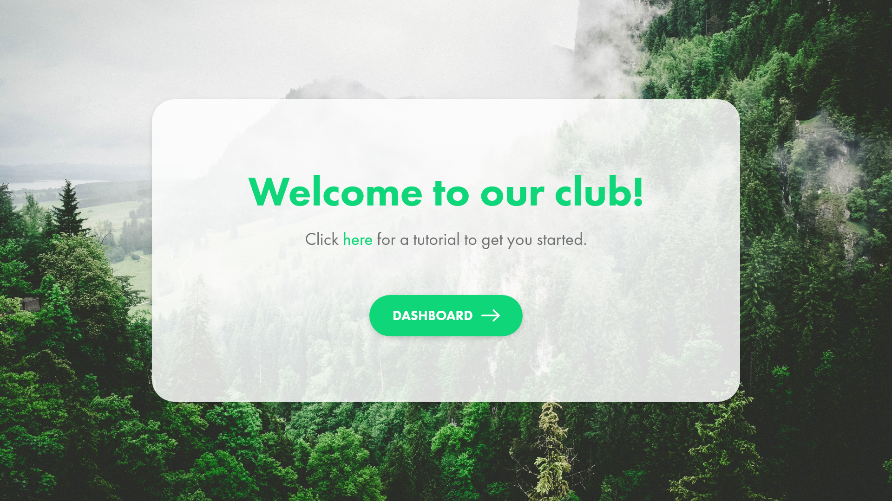
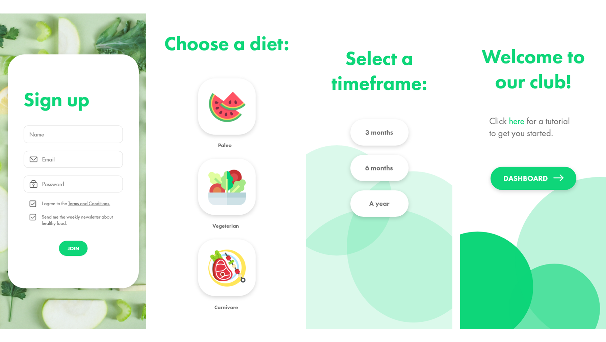
Other projects
You can check out other projects I did for this challenge on my Dribbble page. You can also check out a few of my purely graphic design projects here.